Something about Shadow
(WIP; v0.3.0)
Table of Contents
1. Intro
This guide is not finished.
Pending playstyle writeups and example builds, plus feedback from other players.
Rabbit & Steel Shadow Class guide written primarily for v2.0.2.7.
At the time of starting this guide, the 23 multiplayer (MP) Lunar wins and 37 Hard wins on Shadow. Primarily, the recommendations here are targetted as a carry at 4P Lunar and high WR consistency and with tactless author bias.
This guide could not be made possible without the help of other players in mino_dev Discord.
Special thanks to Obi Rod, Ins’Ania and Kero for early help.
1.1. Related Resources
Details of Shadow’s kit can be found in:
For latest available guides:
For community jargon:
1.2. Sample Definitions
- N1, O1, S1, R1, E1, G1
- Normal and gem variants of Primary.
- R1, R2, R3, R4
- Ruby variants of each respectively: Primary, Secondary, Special and Defensive.
- \(2' \ggg 3 > 1 > 4 > 2\)
- move priority for R2
- Leap Secondary (\(2'\)) is drastically favoured and clicked whenever available;
- Followed by Special, Primary, Defensive and (non-leap) Secondary.
- AoE
- Area-of-Effect; typically used in context of hitting multiple enemies, e.g. fights in Churchouse or Sanctum.
- oGCD
- Shadow’s S3, S4; these can be used without sacrificing GCD time spent on other
- prio
- priority; typically what item/gems should be picked and by whom
1.3. Changelog (Releases)
- v0.1.x (2026-04-18)
- release with ability synergies, gem tier list and ability tier list
- v0.2.0 (2026-04-21)
- applied feedback changes to rotation, gems, items. Added Shadow section and todos.
- v0.2.1 (2026-04-21)
- fixed versioning and added dating
- v0.3.0 (2026-05-02)
- added rotations, class summary, tooltips, other notes; moved gems again.
2. Class Summary
Shadow is a mobile close-quarters bunny with a potent versatility; she excels when playing flexibly, due to Shackles. Many of her effects are unique or inspired from other classes and effects.
Shadow is best characterized by having:
- Decent-damage and short GCD (1.0s) abilities
- Close-Range multi-hit Primary and Secondary abilities
- Secondary having a leap, similar to Heavyblade’s (HB) Special
- Special that hits all enemies on short CD
- Defensives with damage and GCD
- Shares the fastest base movement speed (m/s) with Assassin (Sin)
- Shackles status effect
| Pros | Cons |
|---|---|
| Unique, gacha-like | Defensive has GCD |
| Versatile and variety between runs | Attacks have Shackles |
| Secondary invinciblity | Punishes for leaping or wrong targeting |
| Most gems are damage-viable and reqs | Non-default rotations |
| 4P Support line in O2 G3 | Weak Special builds |
| Consistent without % effects or BiS items/gems | Almost 0 hacky Rabbitluck 8k+ damage builds |
| [MP] Contests many of Sin’s items |
2.1. Shackles
Shadow’s Shackles locks up one of her attacks1 from use on any ability usage. This is independent of any Magicklock trinket effects, cooldowns or item effects (e.g. Lefthand Cast.)
[Author] As well, this can freeze up “input queues” where otherwise, on other characters, you could be able to hold multiple attacks down.
2.2. Inspirations from other Classes and Loot
Shadow gains some distinct effects that appear in other classes, namely:
- S2’s range and charge effect like Dancer’s Secondary
- G3 granting the Shadowcry buff, similar to Dancer’s def
- O2 granting Shadowcurse debuff, similar to Spellsword’s (SS) def
- G1 granting 100 damage 25% of the time to all enemies, is practically a Brightstorm Spear and Darkstorm Knife
2.3. Gacha ability
E3 grants Shadow common access to, often loot-only or class-exclusive, effects like Berserk, Sap and Blackstrike. This distinctly allows Shadow to build into debuffs, multi-hit (on Special); or support most Shadow builds.
- See Shadow (rns.miraheze.org) for exhaustive list of effects.
3. Move Priority (Rotations)
Shadow’s abilities’ damage are more “symmetrical” at base kit. The base kit optimization below are in magnitudes of about ±20dps (10%) and only only valid if attacks hit consistently.
| Base* | \(3 > 1 > 4 > 2\) |
| R2 ∨ R4 | \(2' \ggg 3 > 4 > 1 > 2\) |
| E2 | \(2 \ggg 3 > 4 > 1\) |
| S1 ∨ G1 | \(2 > 4 > 1 > 3\) |
| R1 | \(\text{Repeat}(1'' \rightarrow 2' \lor 4) \gg \text{Base}\) |
| S4 ∨ O4 | \(4 > 3 > 1 > 2\) |
| E4 | \(4 > 1 > 3 > 2\) |
Leaps are designated by \(2'\); charge by \(2''\).
Special (3) can be delayed for mobile enemies.
In fights with multiple enemies, like Churchmouse Streets’ Matti’s P2 mice ads or Geode Plee, save your Special or Defensive until they spawn.
For Darkhouse Depths’ Darkbeast Tauros, due to her zoning, use the late hit animations of Primary and Defensive to deal damage consistently.
3.1. Ruby Leap Archetypes - R2/R4
For normal-sized enemies, play near 3 Rabbitleaps away.
- Position near leap border;
- If Secondary is–
- Available → move outside (leap enables) and use Secondary;
- Shackles → Either–
- Move inside to hit Primary/Defensive;
- Special;
- Repeat.
Larger enemies like Red Darkhouse Ranalie P2 allow you to leap without lunging forward.
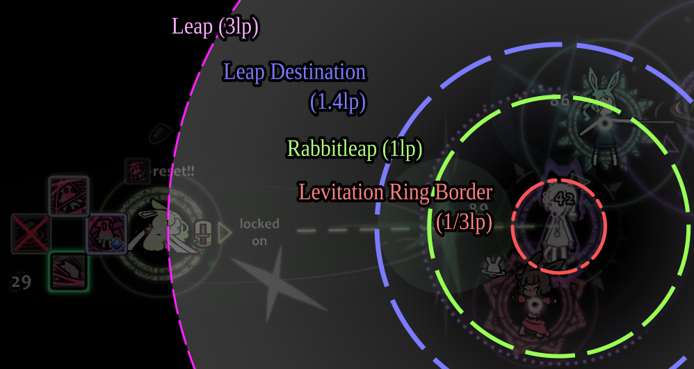
Figure 1: Distances in Rabbitleaps (lp) with Stella
3.1.1. Alt: Omegacharge Ruby Primary (R1)
Same principle to activate leap above:
- One of Leap Secondary / S2 / Defensive;
- R1;
- Repeat.
3.2. Auto-proc + oGCD’s (S1/G1/R4 + S3/S4)
Shadow, at base kit, is again somewhat GCD-limited. Any ability that gets that skips contesting every the usual Primary and Secondary is good.
- S1, G1 and R4 allows Shadow to focus Secondary in previous rotations;
- S3 and S4, as oGCD’s, while listed equal damage to base, can be thought of adding +200 damage ( N1) every click.
4. Ability synergies
Unique or notable gem and item synergies are only presented.
Generic item synergies or damage bonuses are assumed:
- E.g. for uncontested primary core, pick items like Waterfall Polearm, Grandmaster Spear and Youkai Bracelet
4.1. Primary
| Gem | Gem Synergies | Item Synergies | Notes |
|---|---|---|---|
| N1 | Good class N1 | ||
| O1 | short CD items; | Weaker G2 variant for S3 + S4 | |
| S1 | More consistent than G1 for single enemies | ||
| R1 | Leap or | ; Flash- Buff | 600dmg on only iframe req; easiest with S2 |
| G1 | luck-boost; RL() | Multiple-target version of S1, not limited to secondary | |
| E1 | ; Flash- Buff; Bleed | Hardest-hitting primary in-game; Shadow’s highest best option for multi-hits |
S1 and G1 effects does not trigger “use” abilities like Black Wakizashi or Golden Katana, but can trigger Brightstorm Spear.
E1 2s GCD effect can’t be cheated via GCD items, Berserk, Quickdraw or other effects. At base kit, the effect triggers Winter Hat, but not Sacredstone Charm.
4.2. Secondary
| Gem | Leap? | Gem Synergies | Item Synergies | Notes |
|---|---|---|---|---|
| N2 | Yes | Good class N2 | ||
| O2 | Yes | SS Superhex | ||
| S2 | No | Dancer secondary, good uptime | ||
| R2 | Yes | +m/s; | 360dmg for 1.0s GCD/0s CD with only leap req | |
| G2 | No | +luck; | Good with oGCD gems; risky first-buy without synergy | |
| E2 | Yes | Uncheatable Shackles, easy req |
Hitting multiple E2 (33%) is similar to not hitting Special Reset on Dancer (30%). The effect +% is a multiplier after any percent or additive bonuses are calc’d though.
4.3. Special
| Gem | Gem Synergies | Item Synergies | Notes |
|---|---|---|---|
| N3 | Debuff apply; | Weaker class N3, hits all enemies though | |
| O3 | 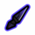 |
Disable universal % | |
| S3 | N3 items; 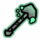 |
“Best” Spc., ~+60DPS at base; oGCD, no slow, loves CD reduction (including 1s → 0s); 0.7s “cd” minimum | |
| R3 | N3 Items; | Good if building special uncontested | |
| G3 | N3 Items; | Dancer Warcry | |
| E3 | N3 Items; +GCD/debuff items; | More dmg on Special. Debuff/buff archetype. |
[MP] Shadow has low prio on Special damage-boosting items without prior synergies (except Garnet Staff or Hawkfeather Fan.)
E3 is affected by Obsidian Rod, Cursed Candlestaff, Old Bonnet / Haunted Gloves and other special items changes. Note, additive bonuses like Eaglewing Charm will not apply to debuffs.
4.4. Defensive
| Gem | Gem Synergies | Item Synergies | Notes |
|---|---|---|---|
| N4 | Harsh slow, good burst, doesn’t consume Blackstrike | ||
| O4 | N4 items; | Leaps; +m/s; allows to click Pri./Sec. 1.5 more times | |
| S4 | N4 items; | oGCD like but longer CD | |
| R4 | (Safety→; DPS→) | +m/s; | 480 damage on leap is amazing |
| G4 | N4 items; | Sanctum/Mice tech | |
| E4 | 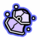 |
Amazing burst, useable twice in reg encounters |
Firststrike Bracelet or Blackstrike source ( Book of Cheats, E3) is oddly quite good given it applies to Defensive damage without consuming it.
Blackstrike on R4 isn’t affected by the Secondary leap that triggers , instead the one after.
5. Gems Tier List
Tier placing prioritizes “lines” and WR consistency. Shadow, by design, should always buy a gem first shop; most gems are damage positive.
- If avoiding leap, one can consider buying S2 and G2; avoid O4.
- Generally, Special damage gems, besides S3, are not a prio pick due to their GCD, CD and low base damage.
- If on Subterra Sanctum or Churchmouse Streets first stage, consider G1, G4 or special gem.
- O2, G3 is great for MP, they’re practically SS’s Superhex and Dancer’s Warcry respectively.
5.1. S: Multipliers
R4, R2 and R1, each alone, can do +30-100% DPS without external support requiring only leap. Scales well late.
5.2. A: Amazing
S3 is about +25% DPS off base as an oGCD. Alternatively, can be used to roll Shackles on Pri/Sec builds.
E3 is a damage increase and, in prolonged fights, E3 is usually carried by its buffs: e.g. Flow-Str/Dex, Blackstrike, Berserk and Warcry.
G1 is an in-class Darkstorm Knife. For single target damage, it’s about +25% DPS off base. S1 is a much higher and consistent single target DPS and non-%.
S2 is amazing for damage uptime via range anywhere. Just buy this if you struggle at damage.
S4 is the comfy QoL Defensive. Like S3, S4 can be used to reroll Shackles. +15% off base. Amazing, but more limited, synergies as an oGCD on 10s and Defensive (non-attack).
5.3. B: Good
E4 is unironically great for being able to deal 900 damage all at-once, twice in regular encounters (trigger at 0s+20s to kill at 22.5s; or save for ads.) The lack of reset isn’t really “felt” in most games.
O2 and G3, in 4P, practically add another team member’s worth of damage off base.
5.4. C: Viable
G2 should be damage positive off base, just % is a risky early buy without S3 and S4 / G4; or item builds on spamming Special and Defensive.
R3 is the best option for spamming out Special damage out or loot effects like Saltwater Staff.
5.5. D: Other (Viable, but…)
O3 can punish Shadow if using Special to reset Shackles or for damage uptime. Only triggers once per regular encounter. Limits % lines but eh.
E1 is the worst “feels” gem in R&S’ entirity. Though it’s, by-far, the best option for multihit synergies when supported by E3.
O1 is an auto-take with S3; but it doesn’t end up scaling with most item CD’s. The effects of Dancer’s O3 (-4s max CD) or Wizard’s O1 (-2s CD/use) are significantly better.
6. Item Tier List
Again, tier placing prioritizes “lines” and WR consistency.
- [4P] Shadow, for AoE, has higher prio on Special loots if:
- Playing on Extra (guaranteed Subterra Sanctum)
- Shadow has S3
- Party has non-phenomenal total DPS and poor AoE
- [4P] Shadow should prio Secondary damage items higher
- Limited to typically Sin, Dancer and Druid
6.1. S: Perfect
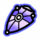
6.2. A: Great
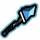
6.3. B: Good, often conditional
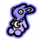 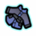 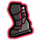 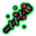 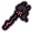
6.3.1. Gold (first shop only)
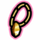
6.4. C: Need synergy, anti-synergy, uncommon
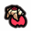
6.5. D: Super-niche, rare
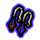
6.6. E: QoL/Unranked
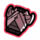 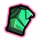 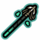
7. Other Notes
7.1. Avoiding leap PVP
For damage/consistency, see Ruby Leap Archetypes - R2/R4. To repeat:
- For R1/ R2/ R4 leaps, leap near the leap distance when you can.
- Position yourself in a way that allows you to hit either Secondary and another ability, if affected by Shackles.
Additionally,
- Spreads have a small end-window where you can leap without taking damage.
- Leap Secondary → Defensive does not provide back-to-back invuln.
- Defensive → Leap Secondary does provide back-to-back invuln, but Secondary can roll Shackles.
- Use your mini hotbar to check if leap is enabled.
7.1.1. Turn on Mini Hotbar
In Options>More Options, you can toggle and customize your Mini Hotbar. This allows you to see
your available abilities (and Shackles) adjacent to your hitbox.
An accent colour will border the Secondary if leap is enabled, dependant on Shadow palette.
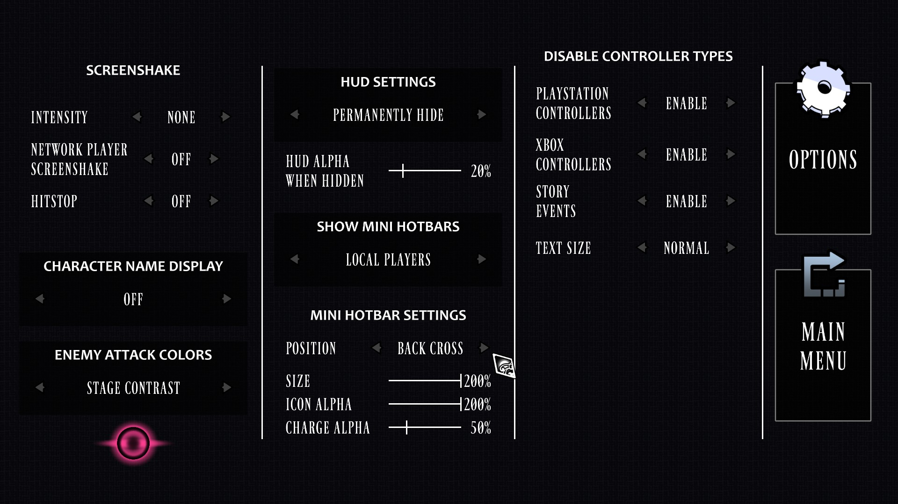
Figure 2: Mini Hotbar Settings
7.1.2. Practices on Targetting
Regarding player controls Nearest Target and Change Target.
If you’re in a fight with multiple enemies, and you do not want to leap:
- identify your current target (and if they’re low health)
- pressing Nearest Target prior to Secondary
- pressing Nearest Target after pressing Change Target
Change Target also allows to slow your character or attack the “centre” (in-between) of targets:
- alternatively, “tapping” movement keys for micromovements
- slowing down your rotation
- not holding attack buttons for prolonged periods.
7.2. Hidden Leap Disable Radius
After enabling leap on Secondary, disabling leap uses an inner “buffer” distance (~2.94lp; ~2x size of Rabbit visible hitbox.)
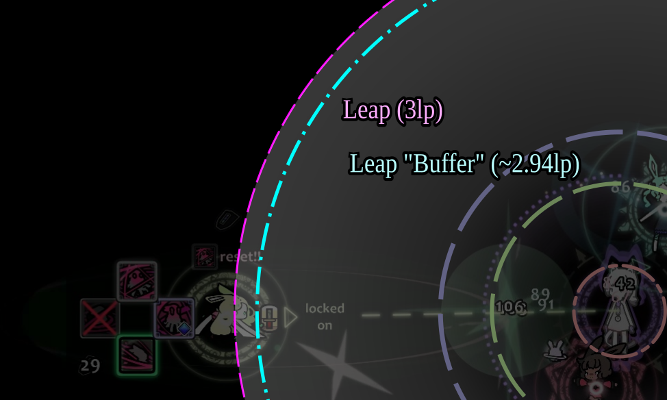
Figure 3: Rabbitleap “Buffer” Disable Radius
Footnotes:
Attacks include Primary, Secondary, Special.